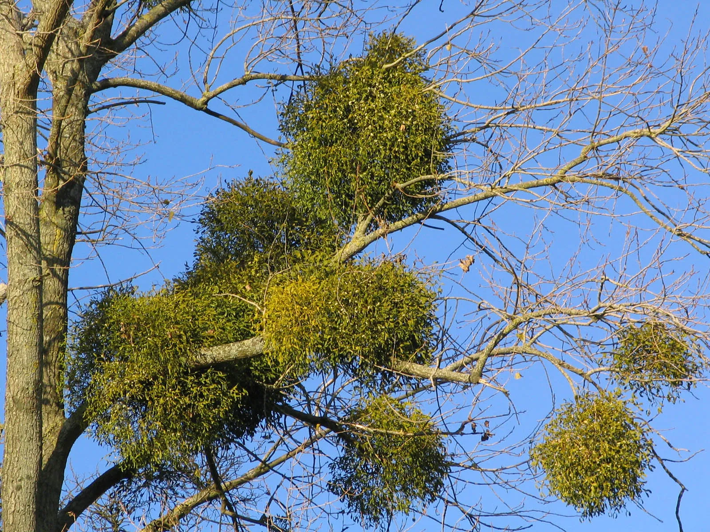

Mistletoe is a parasitic plant traditionally associated with winter holidays, especially Christmas. Known for its green leaves and white berries, mistletoe grows on the branches of trees and absorbs water and nutrients from its host.
The use of mistletoe in celebrations dates back to ancient Celtic and Norse cultures. Druids viewed it as a sacred symbol of life and protection, while Norse mythology linked it to legends of love and peace.
One of the most well-known traditions involving mistletoe is the custom of kissing underneath it. This practice became popular in 18th-century England and spread to other countries.
Mistletoe can be found in many parts of the world, including Europe, North America, and Australia. It typically grows high in the branches of trees such as oaks, apple trees, and maples.